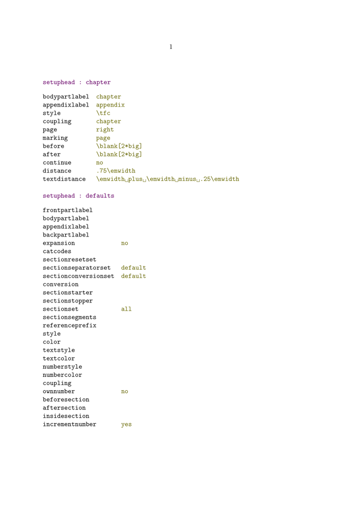

Some command can help for visual debugging
Basics
- \showlayout : add four pages that show margins, layout sizes etc.
- \showsetups : typeset a list of all defined sizes (variables) and their values
- \showmakeup : show some otherwise invisible markup
- \showframe : show frames of text area, layers, boxes etc.
- \showlayoutcomponents : To allow Acrobat Reader users (among others?) to make layers visible/invisible at will, add this command at the start of your file.
Show attributes of visual elements
With \showrootvalues and \showinstancevalues
-
\usemodule [setups] \starttext % \setuphead [chapter] [..,..=..,..] \showinstancevalues [head] [chapter] % \setuphead [..,..=..,..] \showrootvalues [head] \stoptext
- 
Grid, Layers and Column Sets
- \tracelayers : show boxes of layers
- \tracecolumnset : ?
- \tracetextareas : ?
- \showgrid : make line grid visible
- \tracegridsnapping : ?